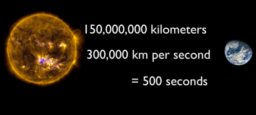

DEVELOPED BY ROBERT ZULU THE PROFESSIONAL PROGRAMMER
LIGHT

While light is made up of light of many different wavelengths, all traveling at the same speed in avacuum
(and interstellar space is essentially a vacuum). The speed of light is about 300,000 kilometers/second
(186,000 miles/second).
If a light beams could be made to travel around
the Earth's surfacre, it would circle the globe seven times in one second.
Recall that according to Einstein's special theory of relativity, the speed of light in vacuum is always
measured as the same speed and is the fastest speed possible in the Universe.
Here's question... how long it take sunlight to reach Earth? This sounds like a strange qeuestion, but think about it. Sunlight travels at the speed of light. Photons emitted from the surface of the sun need travel across the vacuum of space to reach our eyes.
The short answer is that it takes sunlight an average
of 8 minutes and 20 seconds to travel from the Sun to the Earth.
If the Sun suddenly disappeared from the Universe (not
that this could actually happen, don't panic), it would
take a little more 8 minutes before you realized it was time to put
on a sweater.
Here's the math. We orbit the Sun at a distance of about 150 million km.
Light moves at 300,000 kilometers/second. Divide these and
you get 500 seconds, or 8 minutes and 20 seconds.
This is average number.
Remember, the Earth follows an elliptical orbit around the Sun, ranging from
147 million to 152 million km. At its closest point, sunlight only takes 490
seconds to reach Earth. And then at the most distance point, it takes 507 sunlight
to make the journey.
But the story of light gets even more interesting, when you think about the journey light
needs to make inside the Sun.
You probably know that photons are created
by fusion reactions inside the Sun's core. They start off as gamma radiation
and then are emitted and absorbed countless times in the Sun's radiative zone,
wandering around inside the massive star before they finally reach the surface
What you probably don't know, is that these photons striking your eyeballs were ACTUALLY created
tens of thousands of year ago and it took that long for them to be emitted by
the sun.
Once they escaped the surface, it was only a short 8 minutes for
those photons to cross the vast distance from the Sun to the Earth
As you look outward into space, you're actually looking backwards in time.
The light you see from your computer is nanoseconds old. The light reflected from the surface of the Moon
takes only a seconds to reach Earth. The Sun is more than
8 light-minutes away. And so, if the light from the nearest star (Alpha Centauri)
takes more than 4 years to reach us, we're seeing that star 4 years in the past.
There are galaxies millions of light-years away, which means the light we're seeing
left the surface of those stars millions of years ago.
For example, the
galaxy M109 is located about 83.5 million light-years away.
If aliens
lived in those galaxies, and had strong enough telescopes, they would see the
Earth as it looked in the past.They might even see dinosaurs walking on the surface.
SLOWING THE SPEED OF LIGHT TO ZERO>
For centuries humans have been obsessed with speed. We are constantly pushing the limits for how fast we can make things travel. Currently in modern physics, light is regarded as the fastest thing in the universe and is the basis for Albert Einstein's theory of special relativity. But what if the light you saw could be slowed down and even stopped? As hard as it is to believe, scientists at Harvard University have done just that!
The speed of light is constant when it is in a vacuum. It travels an astounding 186,000 miles per second. However, it does slow down when traveling through other common substances such as water (140,000 mi/sec), glass (124,000 mi/sec), and diamond (77,500 mi/sec). Despite the speed reduction when traveling through these substances, it is nowhere close to a speed that we can travel at.
Lene Hau is a world-renowned physicist at Harvard University,and she has figured out a way to stop light in its path. One of the tricks to slowing light to halt is creating a cloud of nealy motionless atoms at near absolute zero (-460 degrees Fahrenheit) This is called a Bose-Einstein condensate.